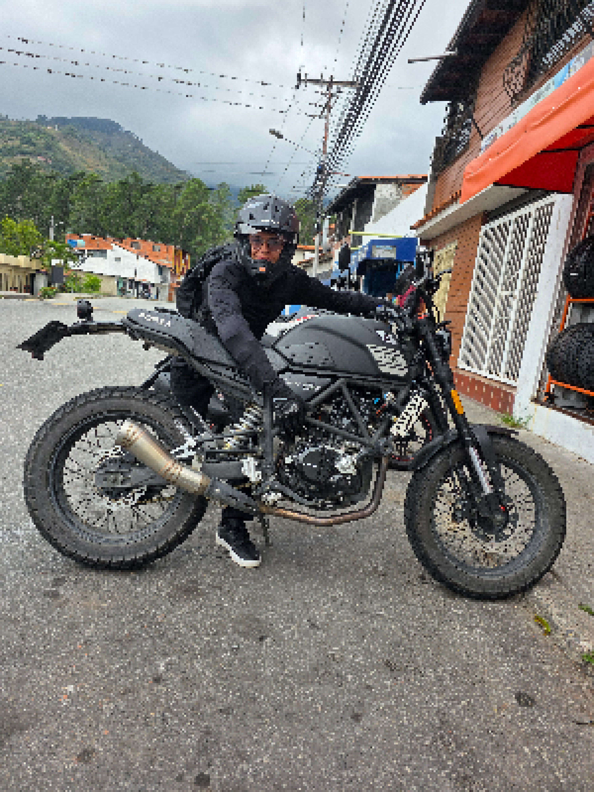

Little things, simple things... going anywhere just to burn some gas, listening to nostalgic music from old bands, watching fantasy movies or series, having a Nescafe in the early morning, watching a sunrise, drinking and laughing until your chest hurts... just enjoying anything in this chaotic world.
pets
this is Tobby, as you can see he likes to sleep, who doesn't?
movies
i don't know what it was, but I was totally hooked on every movie.
i'm not really into romantic movies, but...
every fucking time.
series
how did I get here? Too many memes everywhere, I had to see it.
recommended by a maracucho digital nomad.
traded shows with a special girl: I watched hers, she's watching Breaking Bad. I loved it.
music